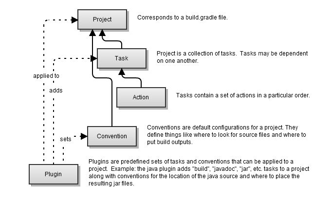
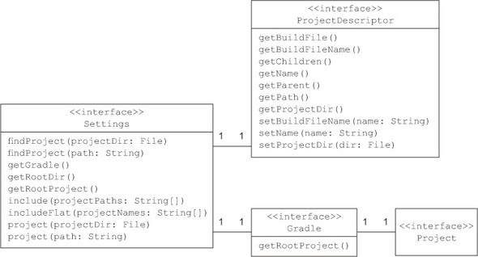
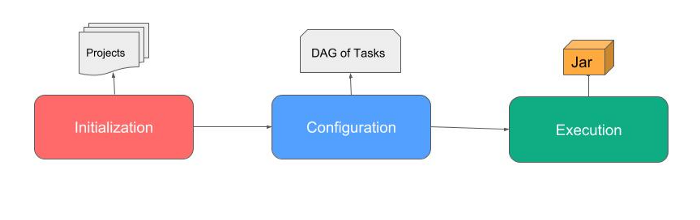
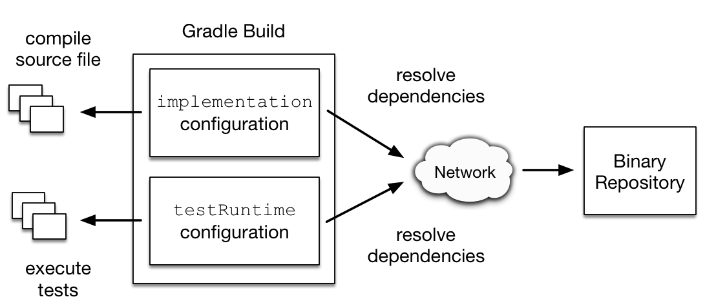
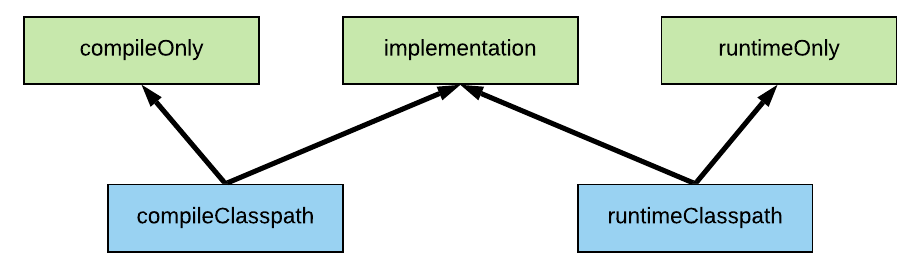
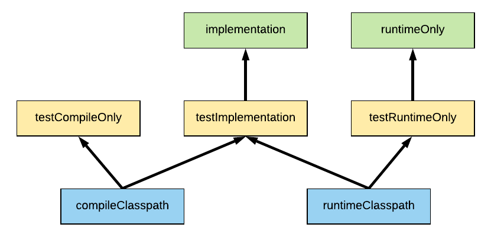
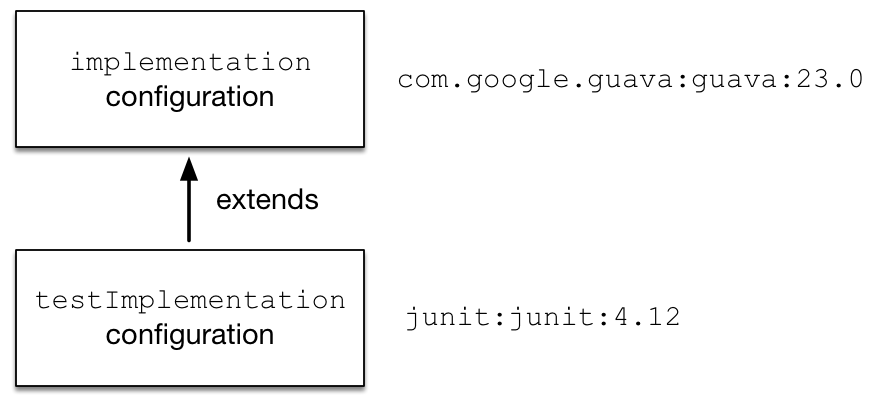

Introduction
For an introduction, from the Gradle User Manual, read What is Gradle? and Build Lifecycle.Gradle is an enterprise-ready build system, powered by declarative and expressive DSL (Groovy and Kotlin).
Gradle applies the principles of
domain-driven design
(DDD ) to model its own domain-building software.
As a consequence, projects and tasks have a direct class representation in Gradle’s API.
As a consequence, projects and tasks have a direct class representation in Gradle’s API.
- Created in 2008 by Gradleware, Gradle
is mostly implemented in Java 5, with an outer layer in Groovy or Kotlin.
Gradle establishes a vocabulary for its model by exposing a Domain-specific language (
DSL ) implemented in Groovy/Kotlin.
In our work, we will write Gradle configuration scripts inKotlin DSL as described in Gradle Build Language ReferenceGradle | Basic concepts
 Gradle project : the semantics is up to us (e.g. build a library JAR, a web application ...). A project does not necessarily represent a thing to be built. It might represent athing to be done , such as deploying your application to staging or production environments. Each project is made up of one or moretasks .Gradle Task : atomic piece of work (e.g. compiling some classes, creating a JAR,...) which a build performs.Gradle build script : Gradle executes as a set of 'declarative' sentences written as a Groovy (build.gradle ) or Kotlin (build.gradle.kts ) script. These languages promote the creation of Domain-specific language (DSL ).Gradle plugin : Gradle at its core intentionally provides very little for real world automation. All of the useful features, are added by plugins, that provide concepts, configuration blocks, and tasks reusable across projects.Gradle Java plugin : introduces the concept of source set, with an associated compile classpath and runtime classpath, with defaults that copy the Maven conventions:- main containing
src/main/java andsrc/main/resources - test containing
src/test/java andsrc/test/resources
- main containing
-
The Gradle wrapper is a core feature that
enables a machine to run a Gradle build script without having to install the runtime.
It also ensures that the build script is run with a specific version of Gradle.
It does so by automatically downloading the Gradle runtime from a central location, unpacking it to your local file system, and using itfor the build.
Its ultimate goal is to create reliable and reproducible builds independent of the operating system, system setup, or installed Gradle version.
- The file gradle/wrapper/gradle-wrapper.properties stores the information about the Gradle distribution.
gradle wrapper --gradle-version xx.yy
//downloads a specific version
The Gradle wrapper is the correct way to use gradle.gradlew <task>
//runs <task> with that exact version. -
Gradle uses two main directories to perform and manage its work: the Gradle
user home directory and theProject root directory. See The Directories and Files Gradle Uses- Each time you initiate a build, the JVM has to be started, Gradle’s dependencies have to be loaded into the class loader, and the project object model has to be constructed. This procedure usually takes a couple of seconds.
Gradle deamon
The Gradle daemon runs Gradle as a background process. Once started, the gradle command will reuse the forked daemon process for subsequent builds, avoiding the startup costs altogether.
The daemon process will automatically expire after some (three-hour) idle time.
- Gradle evaluates and executes build scripts in three phases (that form Gradle’s Build Lifecycle):
Initialization, Configuration, Execution .Gradle scripts areconfiguration scripts . As the script executes, it configures an object of a particular type.
For example, as a build script executes, it configures an object of type Project , (while Init script delegates to Gradle and Settings script delegates to Settings). This object is called the delegate object of the script. - When Gradle executes a Kotlin build script (
.gradle.kts ), it compiles the script into a subclass of KotlinBuildScript. This means that all of the visible properties and functions declared by the KotlinBuildScript type are available in your script.
Each build script is associated with an object of type Project and as the build script executes, it configures this Gradle Project.- A build essentially configures a set of tasks and wires them together — based on their dependencies — to create a Directed acyclic graph (DAG) of thasks.
 Once the task graph has been created, Gradle determines which tasks need to be run in which order and then proceeds to execute them.- Delaying the actual execution allows for a more fine grained configuration. This will be especially useful when modifying existing behavior
- The base mechanism is hiding imperativity under a clean,
declarative API . Usability, understandability, and, ultimately, maintability, get increased when 'Imperativity gets hidden under the hood'. - Well-designed build scripts describe
what steps are needed to build the software, nothow those steps should do the work. That’s a job for custom task types and plugins.
Gradle plugins
All of the useful features of Gradle, like the ability to compile Java code, are added byFromplugins .Using plugins , we read that, to use the build logic encapsulated in a plugin, Gradle first needs toresolve the plugin, and then it needs toapply the plugin to the target, usually a Project.
Plugins add new tasks (e.g. JavaCompile), domain objects (e.g. SourceSet), conventions (e.g. Java source is located at src/main/java) as well as extending core objects and objects from other plugins.
Gradle distinguishes two types of plugins: script plugins and binary plugins.- A
script plugin is a regular Gradle build scriptthat can be imported into other build scripts. The Gradle’s API class Project exposes the methodbuildscript , that works as a Configuration section that states how gradle is able to perform the build.buildscript{ repositories{ ... } dependencies{ classpath '... xxx' }//To use an external library task{ ... } } apply plugin: 'xxx' - A
binary plugins must implement the interfaceorg.gradle.api.Plugin . When defined by the user, uts source code usually lives in thebuildSrc directory and is distributed as a JAR file.plugins{ java application }
The Java plugin
The Java plugin is a smallopinionated framework that assumes sensible default values for many aspects of a Java project.
In The Java Application Plugin we can see the following diagram for the Java Plugin Lifecycle Tasks:
gradlew properties
gives us a list of configurable standard and plugin properties, plus their default values.Gradle Configurations
In Gradle, dependencies are grouped by configurations. AConfiguration represents a resolvable 'resolvable' means that it can be mappable to actual resources) set of dependencies, and is identified by a unique name.
Every dependency declared for a Gradle project applies to a specificscope by means of aConfiguration . For example some dependencies should be used for compiling source code whereas others only need to be available at runtime.
Many Gradle plugins add pre-defined configurations to your project. The Java plugin , for example, adds configurations to represent the various classpaths it needs for source code compilation, executing tests and the like. More specifically, dependencies required for compiling Java production source code are added with theimplementation configuration.Gradle version 6 supports both theimplementation and compile dependency configurations.
However, compile, compile is now deprecated.
TheJava Library Plugin adds an additional api configuration, on top of theimplementation configuration.
Configurations can be directly added and accessed at the root level of a project; you can decide to use one of the configurations provided by a plugin or declare your own. For example:dependencies { testImplementation 'junit:junit:4.13' implementation 'com.google.guava:guava:29.0.1-jre' }shows two dependencies: the Junit library which targets thetestImplementation dependency target and the guava library which targets theimplementation dependency target.
Every project owns a ConfigurationContainer that manages the corresponding configurations.Extending Gradle
Gradle provides several mechanisms that allow you to extend it:- Custom task types
(It’s typically best to put the source file for a custom task type in the
buildSrc directory) - Custom task actions
- Extra properties
Hands on Gradle
-
Starting
From Building Java Applications Sample.
Start with some automatic code generation:gradle init (select 2, 3, 1, 2, 1, demo, demo) ├── gradle │ └── wrapper │ ├── gradle-wrapper.jar │ └── gradle-wrapper.properties ├── gradlew//Generable with the built-in command gradle wrapper --gradle-version=<VERSION> ├── gradlew.bat ├── settings.gradle.kts//lists the subprojects └── app ├── build.gradle.kts//the build configuration script └── src ├── main │ └── java │ └── demo │ └── App.java └── test └── java └── demo └── AppTest.java -
Our build contains one subproject called
app that represents the Java application we are building. It is configured in the build.gradle.kts file.plugins { application } repositories { jcenter() } dependencies { testImplementation("junit:junit:4.13")The plugin Application implicitly applies the Java plugin Java plugin and the Distribution plugin that facilitates building archives that serve as distributions of the project. Distribution archives typically contain the executable application and other supporting files, such as documentation.// This dependency is used by the application. implementation("com.google.guava:guava:29.0-jre") } application { mainClass.set("demo.App") } - Loook at the generated file settings.gradle.kts.
One of the purposes of the settings object is to allow you to declare aBy default, Gradle uses the directory name as project name. You can change this in the settings.gradle.kts file.
list of projects which are to be included in the build.
Each subproject has its own build.gradle.kts file. See the section Multi projects. -
Build and run
TheGradle wrapper is the correct way to use gradle. The Application bundles the application, with all its dependencies.
Look at the generated directorygradlew build SETTINGS RUNS ... > Configure project :app ...... build in app BUILD SUCCESSFUL in 9s 7 actionable tasks: 6 executed, 1 up-to-dateapp/build/ and at the generated report file for testsindex.html .
As the script executes, it configures an object called thedelegate object of the script: -
gradlew -q build //-q suppresses Gradle’s log messages SETTINGS RUNS ... ...... build top-level //After Multi project ...... build in app -
java -cp app/build/classes/java/main demo.App //using Java to run Hello World! -
gradlew run //using Gradle to run SETTINGS RUNS ... > Configure project :app ...... build in app > Task :app:run Hello World!BUILD SUCCESSFUL in 7s 2 actionable tasks: 2 executed -
jar tf app/build/libs/app-1.0.jar
//Verify that the archive is valid META-INF/ META-INF/MANIFEST.MF demo/ demo/App.classgradlew jar //Already done by application jar xf app/build/libs/app-1.0.jar META-INF/MANIFEST.MF java -jar app/build/libs/app-1.0.jar //run from jar Hello World! Properties
Each instance of Project and Task provides properties that are accessible through getter and setter methods. A property could be a task’s description or the project’s version.
Properties can be directly injected into your project by declaring them in a properties file namedgradle.properties under the directory <USER_HOME>/.gradle or a project’s root directory. This file consists of key-value pairs.myprop1="myprop1-value"
Extra properties
All enhanced objects in Gradle’s domain model can hold extra user-defined properties. This includes, but is not limited to, projects, tasks, and source sets.ext{ set( "myprop3", "myprop3-value defined using the ext namespace ") }Extra properties on a project are visible from its subprojects.
For examples, see later the sub-projecttaskProperites :Predefined access to properties
gradlew project //get information about your project Root project 'demo' \--- Project ':app'gradlew properties //get a list of standard and plugin properties allprojects: [root project 'demo', project ':app'] ... name: demo ... project: root project 'demo' ... rootDir: C:\Didattica2018Work\iss2021Lab\GradleIntro rootProject: root project 'demo' ... subprojects: [project ':app'] ...-
Implementation configuration
When we’re configuring Gradle dependencies in a Java project, all we’re really doing is configuring which dependencies should appear on two classpaths:Compile classpath – this is a list of dependencies that are required for the JDK to be able to compile Java code into .class filesRuntime classpath – this list of dependencies is required to actually run the compiled Java code
 Use theimplementation dependency configuration if you need the dependency to be on both the compile and runtime classpaths. If not, consider compileOnly or runtimeOnly.
You can inspect your classpaths using the taskdependencies (seeViewing and debugging dependencies ) Gradle can visualize the whole dependency tree for every configuration available in a project.
It’s a very similar story for test dependencies, with the Gradle Java plugin providing the testRuntimeOnly, testImplementation, and testCompileOnly dependency configurations.gradle -q :app:dependencies --configuration implementation implementation - Implementation only dependencies for source set 'main'. (n) \--- com.google.guava:guava:29.0-jre (n) (n) - Not resolved (configuration is not meant to be resolved) A web-based, searchable dependency report is available by adding the --scan option.
The `gradle dependencies` command that lists all the dependencies of a project for each dependency targetgradle -q :app:dependencies testImplementation - Implementation only dependencies for source set 'test'. (n) \--- junit:junit:4.13 (n) (n) - Not resolved (configuration is not meant to be resolved) A web-based, searchable dependency report is available by adding the --scan option.gradle -q dependencies No configurationsgradlew :app:dependencies //... list all the dependencies gradlew :app:dependencies --configuration testRuntimeClasspath testRuntimeClasspath - Runtime classpath of source set 'test'. +--- com.google.guava:guava:29.0-jre | +--- com.google.guava:failureaccess:1.0.1 | +--- com.google.guava:listenablefuture:9999.0-empty-to-avoid-conflict-with-guava | +--- com.google.code.findbugs:jsr305:3.0.2 | +--- org.checkerframework:checker-qual:2.11.1 | +--- com.google.errorprone:error_prone_annotations:2.3.4 | \--- com.google.j2objc:j2objc-annotations:1.3 \--- junit:junit:4.13 \--- org.hamcrest:hamcrest-core:1.3Configuration hierarchies
A configuration can extend other configurations to form an inheritance hierarchy. Child configurations inherit the whole set of dependencies declared for any of its superconfigurations.
Configuration inheritance is heavily used by Gradle core plugins like the Java plugin. A Java project that uses JUnit to write and execute test code also needs Guava if its classes are imported in the production source code.
A project dependency is a special form of an execution dependency. It causes the other project to be built first and adds the jar with the classes of the other project to the classpath. It also adds the dependencies of the other project to the classpath.
About build, project, Tasks
ATask is an atomic operation on the project, which can have input and output files, depend on other tasks (can be executed only if those are completed).Tasks as operations
From Build Script Basics:
Example: add a task in build.gradle.kts and execute it.tasks("hello") { doLast {From Gradle Build Language Reference we read://a shortcut to define an action println("Hello world from app - this=${this}") } }gradlew hello SETTINGS RUNS ... > Configure project :app ...... build in app > Task :app:hello Hello world from app - this=task ':app:hello' BUILD SUCCESSFUL in 6s 1 actionable task: 1 executedgradlew -q hello // SETTINGS RUNS ... ...... build in app Hello world from app - this=task ':app:hello'-q suppresses Gradle’s log messagesgradlew -q :app:hello //Another way to call ---------------------------------------------------------------------gradlew tasks --all //Shows all available tasks A build script is made up of zero or more statements and script blocks.In particular:
Statements can include method calls, property assignments, and local variable definitions.- A
script block is a method call which takes aclosure as a parameter.
- Every task has a list of
actions , and when it executes it runs all of them in the order they are declared. - The default task has only actions doFirst and doLast.
- Tasks can declare dependencies among each other: one task may need other tasks to complete successfully.
- The less dependencies are declared, the faster is the build (due to parallelization).
- Transitive dependencies are resolved automatically (if available in the repository
Maven Central / JCenter ).
Task configuration vs. task execution
The build script executes when Gradle is invoked; itconfigures tasks and dependencies.
A task is actuallyexecuted later , when it is invoked.tasks("notgood"){ println("Message shown during the configuration phase: no task action defined ") }gradlew -q notgood SETTINGS RUNS ... ...... build in app Message shown during the configuration phase: no task action defined in task ':app:notgood'Gradle’s tasks embeds code.
Gradle’sbuild scripts are code : they give you the full power of Groovy and Kotlin.
tasks is a container objects that contain Task objects. You can use:
theregister() method to create new ones
thenamed() method to configure existing tasks.
Example: add in build.gradle.ktstasks.register("count") { doLast { repeat(4) { print("$it ") } println() } }gradlew -q count SETTINGS RUNS ... ...... build in app 0 1 2 3 ----------------------------------------------------------- tasks.named("count"){ doFirst { println("count STARTS ")} }gradlew -q count SETTINGS RUNS ... ...... build in app count STARTS 0 1 2 3Task dependencies
You can declare tasks thatdepend on other tasks . Example: add in app/build.gradle.ktstasks.register("welcome") {//could be declared dependsOn("hello") dependsOn("count") doLast { println("Welcome task that depends on tasks hello and count ") } }before hello and count (hoisting)gradlew -q welcome SETTINGS RUNS ... ...... build in app 0 1 2 3 Hello world from app - this=task ':app:hello' Welcome task that depends on tasks hello and countGradle’s philosophy is to declarewhat should be executed before a given task,not how it should be executed. Thus, Gradledoesn’t guarantee the order in which the dependencies of a task are executed.
However, the execution order is automatically determined by theinput/output specification of a task. Task inputs and outputs are evaluated during theconfiguration phase to wire up the task dependenciesTask inputs and outputs
A task is consideredup to date if inputs and outputs haven’t changed since the last task execution. Therefore, the task only runs if the inputs and outputs are different; otherwise, it’s skipped. Inputs and outputs are defined as fields in classDefaultTask .
For examples see the section User-defined Task types.The
The clean task is defined by the Java plugin and it simply removes the app/build/ (buildDir) folder, that contains the output of the gradle operation)clean task
Gradle will track task dependencies and clean appropriate parts for you. Thus, You don't need to run the clean task. However, if custom tasks don't track their dependencies well (they're bugged), then clean is a workaround.tasks.register("myclean") { doLast { if ( !buildDir.deleteRecursively() ) { throw IllegalStateException("Cannot delete $buildDir") } } }gradlew clean Dynamic Tasks
You cancreate tasks dynamically .repeat(4) { counter -> tasks.register("task$counter") { doLast { println("I'm task number $counter") } } }gradlew -q task1 SETTINGS RUNS ... ...... build in app I'm task number 1-
You can exploit
existing task types tasks.register
<Copy> ("mycopy") {//Registers a new task of type Copy and configures it println("projectDir= $projectDir")//GradleIntro\app println("buildDir = $buildDir")//GradleIntro\app\build from("$projectDir/../app/src"){ exclude( "**/main/resources", "**/test" ) } into( "../copiedFiles" ) }gradlew -q mycopy SETTINGS RUNS ... ...... build in app projectDir= C:\Didattica2018Work\iss2021Lab\GradleIntro\app buildDir = C:\Didattica2018Work\iss2021Lab\GradleIntro\app\build//Look at the (created) directory copiedFiles - less code has to be written.
- a single procedure can be developed for reuse, eliminating the need to retype the code many times.
- the code is stored across multiple files.
- errors can easily be identified, as they are localised to a subroutine or function.
- the same code can be used in many applications.
- the scoping of variables can easily be controlled.
Running multi-project tasks
Let us try some call, to better understand the behavior of Gradle.gradlew -q :app:commontask0 //execute a task of (sub-)project app SETTINGS RUNS ... ...... build top-level ...... build in app ...... build in taskAccess sub-project I'm commontask number 0 in project appgradlew -q :taskAccess:commontask0 //execute a task of (sub-)project taskAccess SETTINGS RUNS ... ...... build top-level ...... build in app ...... build in taskAccess sub-project I'm commontask number 0 in project taskAccessgradlew -q commontask0 //execute the task in all the (sub-)projects SETTINGS RUNS ... ...... build top-level ...... build in app ...... build in taskAccess sub-project I'm commontask number 0 in project demo I'm commontask number 0 in project app I'm commontask number 0 in project taskAccessDefault tasks
Gradle allows you to define one or more default tasks that are executed if no other tasks are specified.defaultTasks( "count" )
//declared in build.gradle.kts allprojects//The task count is defined in app/build.gradle.kts gradlew -q SETTINGS RUNS ... ...... build top-level ...... build in app 0 1 2 3//Result of the task count defined in app Using properties
In order to experiment the usage of (extra properties), let us introduce a new sub-project taskProperties with a local filetaskProperties/gradle.properties .
The sub-project build file taskProperties/build.gradle.kts does introduce a set of differnet ways to declare extra properties and defines a task named showMyProps that accesses these properties and shows their value.gradle -q taskProperties:showMyProps SETTINGS RUNS ... ...... build top-level ...... build in taskProperties myprop1 = "myprop1-value defined in taskProperties/gradle.properies" myprop2 = myprop2-value defined using by extra ext.get("myprop3") = myprop3-value defined using the ext namespace extra["logo"] = this is a task project.extra["purpose"]= todoAccessing a task via API - adding behavior
Delaying the actual execution of tasks is especially useful whenmodifying existing behavior .
Let us extends the behavior of the shared taskcommontask1 by adding in the build filetaskAccess/build.gradle.kts of the taskAccess subproject a doFirst and another doLast operations for that task.val t1 = tasks.named("commontask1") t1{//Accessing a task via API - adding behaviour doFirst { println("Configured later, but executed as first in task named ${t1.name}") } } t1{//Accessing a task via API - adding behaviour doLast { println("Another last of task named ${t1.name}") } }gradlew -q :taskAcces:commontask1 SETTINGS RUNS ... ...... build top-level ...... build in app ...... build in taskAccess sub-project Configured later, but executed as first in task named commontask1 I'm commontask number 1 in project taskAccess Another last of task named commontask1
Let us extends the behavior of the shared taskexplain by adding in the build filetaskAccess/build.gradle.kts of the taskAccess subproject a doFirst and another doLast operations for that task.tasks.named("explain") { doFirst{//additional configuration to the task explain println( " - I'm the taskAccess sub-project: START - ") } doLast{//additional configuration to the task explain println( " - I'm the taskAccess sub-project: END - ") } }
Advanced
Multi projects
One of the purposes of the settings object is to allow you to declare all the projects which are to be included in the build. See Multi-Project Builds in GradleThe benefits of using modular programming include:In the following, we will create new subprojects to introduce further examples of gradle tasks.
To this end, we will introduce anew directory for each example , by properly extending the content of the settings.gradle.kts file. For example:println("SETTINGS RUNS ...") rootProject.name = "demo" include("app")Moreover, we introduce ainclude("taskAccess") top-level project build.gradle.kts that configures build behaviour that isshared between all sub-modules so that we don’t have to duplicate things in the sub-modules:println(" ...... build top-level ") allprojects{ tasks.register("explain"){//The (sub-)project shows itself doLast { println( "Hello, I'm ${project.name} project. My tasks are:") tasks.forEach { println("${it.name}") } } } repeat(4) { counter ->//Each (sub-)project defines 4 tasks tasks.register("commontask$counter") { doLast { println("I'm commontask number $counter n project ${project.name }") } } } }gradlew -q project
Shows the structure of the project.SETTINGS RUNS ... ...... build top-level ...... build in app Message shown during the configuration phase: no task action defined in task ':app:notgood' Root project 'demo' +--- Project ':app' \--- Project ':taskAccess'
gradlew -q :app:explain
First, all the build configurations are executed and then the shared task explain is executed with reference to the (sub-)project appSETTINGS RUNS ... ...... build top-level ...... build in app ...... build in taskAccess sub-project Hello, I'm app project. My tasks are: Message shown during the configuration phase: no task action defined in task ':app:notgood' ...//Shows the tasks defined in the java plugin , the tasks defined in the top-level project build./build.gradle.kts (e.g.explain, commontask0, commontask1, commontask2, commontask3 ) and the tasks defined in the app buildapp/build.gradle.kts (e.g.hello, notgood, count, task0, task1, task2, task3, welcome )gradlew -q :taskAccess:explain
The shared task explain shows the tasks available in (sub-)project taskAccess with our new prefix and suffix messages. They are less than the tasks available in app since the java plugin is not included in the taskAccess subproject .SETTINGS RUNS ... ...... build top-level ...... build in app ...... build in taskAccess sub-project - I'm the taskAccess sub-project: START - Hello, I'm taskAccess project. My tasks are: buildEnvironment commontask0 commontask1 commontask2 commontask3 components dependencies dependencyInsight dependentComponents explain hello help kotlinDslAccessorsReport model outgoingVariants projects properties tasks - I'm the taskAccess sub-project: END - - Each time you initiate a build, the JVM has to be started, Gradle’s dependencies have to be loaded into the class loader, and the project object model has to be constructed. This procedure usually takes a couple of seconds.
-
Accessing a task via API - adding dependency
State that, in (sub-)project taskAccess the shared task commontask0, depends on other tasks:tasks.named("commontask0") {//Accessing a task via API - adding a dependency dependsOn("commontask3", "commontask2") }gradlew -q :taskAccess:commontask0 //execute a task of (sub-)project taskAccess SETTINGS RUNS ... ...... build top-level ...... build in app ...... build in taskAccess sub-project I'm commontask number 2 in project taskAccess I'm commontask number 3 in project taskAccess I'm commontask number 0 in project taskAccess -
Accessing a task via API - control the execution order
In some cases it is useful tocontrol the order in whichtasks will execute, without introducing an explicit dependency between those tasks.
There are two ordering rules available:must run after andshould run after . See Ordering taskstasks.named("commontask2") { mustRunAfter(tasks.named("task3")) }gradlew -q :taskAccess:commontask0 //execute a task of (sub-)project taskAccess SETTINGS RUNS ... ...... build top-level ...... build in app ...... build in taskAccess sub-project I'm commontask number 3 in project taskAccess I'm commontask number 2 in project taskAccess I'm commontask number 0 in project taskAccess Hooking into the build lifecycle
In Gradle, alifecycle event can occur before, during, or after a specific build phase.
Sometimes, it could be useful to execute code when a specific lifecycle event occurs. For example, to get feedback about failed builds as early as possible, we could send an email to all developers on the team.
Let us introduce a new sub-project taskEvents The sub-project build file taskEvents/build.gradle.kts show the two main ways to write a callback to build lifecycle events:
- within a closure
gradle.taskGraph.whenReady { println("whenReady version=$version ${hasTask(":taskEvents:release")}" ) version = if (hasTask(":taskEvents:release")) "1.0" else "1.0-SNAPSHOT" } - with an implementation of a listener interface provided by the Gradle API.
gradle -q :taskEvents:release SETTINGS RUNS ... ...... build top-level ...... build in taskEvents sub-project whenReady version=not-yet-defined true We build the zip with version=1.0 We release now- within a closure
- One such type is the simple task, where you define the task with an
action closure , as done so far. - The other type of task is the enhanced task, where the
behaviour is built into the task , and the task provides some properties which you can use to configure the behaviour.
See Authoring Tasks and Developing Custom Gradle Task Types Example: using org.gradle.api.Exec
As an example, let us introduce the new sub-project taskCustom (with its own build file taskCustom/build.gradle.kts ) and a custom version of the Taskorg.gradle.api.Exec (seeGradle Build Language Reference ) that executes a command line process.
Example: execute a command
task<Exec>("mycmd") { workingDir("$projectDir") if (System.getProperty("os.name").toLowerCase().contains("windows")) { commandLine( "cmd", "/c",//Esegue il comando specificato dalla stringa e poi si arresta "echo", "Hello from Windows" //"cmd1.bat"//Another command cmd1.bat ) } else { commandLine( "sh", "-c", "echo", "Hello from NO-Windows" ) } }gradlew -q :taskCustom:mycmd SETTINGS RUNS ... ...... build top-level ...... build in app Message shown during the configuration phase: no task action defined in task ':app:notgood' ...... build in taskAccess sub-project ...... build in taskCustom sub-project "Hello from Windows"Example: print the current version of Java
import org.gradle.internal.jvm.Jvm println(" ...... build in taskCustom sub-project ") tasks.register<Exec>("printJavaVersion") {// Configuration action is of type T.() -> Unit, in this case Exec.T() -> Unit val javaExecutable = Jvm.current().javaExecutable.absolutePath commandLine(//this is a method of class org.gradle.api.Exec javaExecutable, "-version" )// There is no need of doLast { println("-------- printJavaVersion END") } doFirst { println("-------- printJavaVersion START") } }doLast / doFirst , actions are already configured // Still, we may want to do something before or after the task has been executedgradlew -q :taskCustom:printJavaVersion SETTINGS RUNS ... ...... build top-level ...... build in app Message shown during the configuration phase: no task action defined in task ':app:notgood' ...... build in taskAccess sub-project ...... build in taskCustom sub-project -------- printJavaVersion STARTS java version "15.0.1" 2020-10-20 Java(TM) SE Runtime Environment (build 15.0.1+9-18) Java HotSpot(TM) 64-Bit Server VM (build 15.0.1+9-18, mixed mode, sharing) -------- printJavaVersion END-
Example: commands to compile Java
Let us introduce the new sub-project taskJavaCompile ( with its own build file taskJavaCompile/build.gradle.kts ) and modify settings.gradle.kts as follows:println("SETTINGS RUNS ...") rootProject.name = "demo" include("app") //include("taskAccess") //include("taskCustom") include("taskJavaCompile")fun findJavaSources(): Array<String> = projectDir .listFiles { it: File -> it.isDirectory && it.name == "src" } ?.firstOrNull()// If it's not there we're done ?.walk()// If it's there, iterate all its content (returns Sequence<File>) ?.filter { it.extension == "java" }// Pick all Java files ?.map { it.absolutePath }// Map them to their absolute path ?.toList()// Sequences can't get converted to arrays, we must go through lists ?.toTypedArray()// Convert to Array<String> ?: emptyArray()// Yeah if anything's missing there are no sources // Create a new configuration, our compileClasspath val compileClasspath by configurations.creating tasks.register("mycompileJava") { val sep = if (Os.isFamily(Os.FAMILY_WINDOWS)) ";" else ":" val classpathFiles = compileClasspath.resolve() //could be empty: NO joinToString val myclasspath = if( classpathFiles.size==0 ) classpathFiles; else classpathFiles.joinToString(separator = sep ) // Build the command val sources = findJavaSources() println("sources.size=" + sources.size) if (sources.isNotEmpty()) { val javacExecutable = Jvm.current().javacExecutable.absolutePath commandLine( "$javacExecutable", "-cp", myclasspath, "-d", "$projectDir/output",//The compiled files go here *sources ) } }gradlew -q :taskJavaCompile:mycompileJava SETTINGS RUNS ... ...... build top-level ...... build in app Message shown during the configuration phase: no task action defined in task ':app:notgood' ...... build in taskJavaCompile sources.size=2 Example: commands to run Java
Let us introduce the new sub-project taskJavaRun ( with its own build file taskJavaRun/build.gradle.kts ) and modify settings.gradle.kts as follows:println("SETTINGS RUNS ...") rootProject.name = "demo" include("app") //include("taskAccess") //include("taskCustom") //include("taskJavaCompile")In the new project, we include the following directories:include("taskJavaRun") Root project 'demo' +--- Project ':app' \--- Project ':taskJavaRun' lib junit-4.13.jar src Program1.java TestProgram1.java//Requires JUnit runtimeClasspath “inherits” from compileClasspath
The build file for this project is taskJavaRun/build.gradle.kts:import org.apache.tools.ant.taskdefs.condition.Os import org.gradle.internal.jvm.Jvm println(" ...... build in taskJavaRun ")//a runtimeClasspath configuration 'inherits' from compileClasspath and includes the output folder val compileClasspath by configurations.creating val runtimeClasspath by configurations.creating {// The configuration is an extension of compileClasspath extendsFrom(compileClasspath) } val sep = if (Os.isFamily(Os.FAMILY_WINDOWS)) ";" else ":" data class FinderInFolder(val directory: String) { fun withExtension(extension: String): Array= projectDir .listFiles { it: File -> it.isDirectory && it.name == directory } ?.firstOrNull() ?.walk() ?.filter { it.extension == extension } ?.map { it.absolutePath } ?.toList() ?.toTypedArray() ?: emptyArray() } fun findFilesIn(directory: String) = FinderInFolder(directory) fun findSources() = findFilesIn("src").withExtension("java") fun findLibraries() = findFilesIn("lib").withExtension("jar") fun DependencyHandlerScope.forEachLibrary(todo: DependencyHandlerScope.(String) -> Unit) { findLibraries().forEach { println("library $it") todo(it) } } dependencies { forEachLibrary { compileClasspath(files(it)) } runtimeClasspath( files("$projectDir/bin") ) } val compileJava = tasks.register ("compileJava") { val classpathFiles = compileClasspath.resolve() val myclasspath = if( classpathFiles.size==0 ) classpathFiles; else classpathFiles.joinToString(separator = sep ) // Build the command val sources = findSources() if (sources != null) { // Use the current JVM's javac val javacExecutable = Jvm.current().javacExecutable.absolutePath commandLine( "$javacExecutable", "-cp", myclasspath, "-d", "$projectDir/bin", //The compiled files go here *sources ) } } tasks.register ("runJava") { val classpathFiles = runtimeClasspath.resolve() val myclasspath = if( classpathFiles.size==0 ) classpathFiles; else classpathFiles.joinToString(separator = sep ) val mainClass = "Program1" //TODO: avoid hardcoding the name val javaExecutable = Jvm.current().javaExecutable.absolutePath commandLine( "$javaExecutable", "-cp", myclasspath, mainClass ) dependsOn(compileJava) }gradlew -q :taskJavaRun:runJava SETTINGS RUNS ... ...... build top-level ...... build in app Message shown during the configuration phase: no task action defined in task ':app:notgood' ...... build in taskJavaRun library C:\Didattica2018Work\iss2021Lab\GradleIntro\taskJavaRun\lib\junit-4.13.jar Hello from Program1 written in JavaUser-defined Task types
New, user defined tasks:- must implement the
Task interface - must be extensible (
open class). At runtime, Gradle creates subclasses on the fly. - usually inherit from
DefaultTask - must have a parameterless constructor annotated with
@Inject , since the costruction of tasks happens via dependency injection - A public method can be marked as
@TaskAction , and will get invoked to execute the task
It is a good practice (that will become mandatory in future Gradle releases) to annotate everypublic property of a task with a marker annotation that determines whether it is aninput or anoutput .@Input, @InputFile, @InputFiles, @InputDirectory, @InputDirectories @OutputFile, @OutputFiles, @OutputDirectory, @OutputDirectories @Internal marks some property that is used as output internally.Incremental builds and incremental tasks
The reason of Input/Output annotations is related toIncremental Build and the need ofIncremental tasks .- Gradle caches intermediate build results, using Input/Output markers to undersand whether or not some task is up to date. Time to build completion can decrease from tens on minutes to seconds!
- When launched with the
-t option, Gradle re-runs the requested tasks every time something changes. Input/Output markers are used to understandwhat to actually run again
println("SETTINGS RUNS ...") rootProject.name = "demo" include("app") //include("taskAccess") //include("taskCustom") //include("taskJavaCompile") include("taskJavaRun")See also Developing Custom Gradle Task Typesinclude("taskClasses") open class GreetingTask : DefaultTask() { @Input var greeting = "default hello from GreetingTask" @TaskAction fun greet() { println(greeting) } }// Create a task using the new tasktype and customize tasks.register<GreetingTask>("mygreetings"){ greeting = "my customised greetings from GreetingTask" }gradlew -q :taskClasses:mygreetings SETTINGS RUNS ... ...... build top-level ...... build in app Message shown during the configuration phase: no task action defined in task ':app:notgood' ...... build in taskClasses sub-project my customised greetings from GreetingTask- must implement the
Gradle wrapper
Gradle execution
Custom task types
Gradle supports two types of task.-
Gradle offers some facilities to make it writing new tasks easier.
The Gradle API includes a wide range of existing tasks (like Copy, Wrapper, and Exec) that you can use simply by setting properties.
Gradle buildSrc
Since subprojects have no access to the root’s defined types, Gradle provides project-global type definitions using a specialUpon discovery of the directory, Gradle automatically compiles and tests this code and puts it in the classpath of your build script.
This allows imperative code to get isolated and shared among subprojects.
For multi-project builds there can be only one buildSrc directory, which has to sit in the root project directory.
Root project 'demo'
+--- Project ':app'
buildSrc
src
main
kotlin
CommonOps.kt
buildSrc/src/main/kotlin/CommonOps.kt includes the definition of the code of a custom Task.
open class CommonTask @Inject constructor() : DefaultTask() {
@Input var prefix ="buildSrc/CommonTask | "
@Input var msg ="Hello from CommonTask"
@TaskAction
fun commonOp() {
println("$prefix $msg ")
}
}
The custom task cannot be used by itself; we need to create an enanced task.
Let us introduce the new sub-project taskForBuildSrc ( with its own build file taskForBuildSrc/build.gradle.kts ) and modify settings.gradle.kts as follows:
println("SETTINGS RUNS ...")
rootProject.name = "demo"
include("app")
...
include("taskForBuildSrc")
Now introduce an enhanced CommonTask named ct:
taskFinally, let us tell Gradle to run the task named ct:("ct"){ msg ="Hello from ${this.name} in ${project.name}" }
Note that Gradle creates agradlew -q ct SETTINGS RUNS ... ...... build top-level ...... build in app Message shown during the configuration phase: no task action defined in task ':app:notgood' ...... build in taskAccess sub-project taskAccess | compileClasspath= configuration ':taskForBuildSrc:compileClasspath'buildSrc/CommonTask | Hello from ct in taskForBuildSrc
gradlew :taskForBuildSrc:dependencies
Refactoring Java operations to compile/run
Now, let us define our custom tasks to compile and run Java programs withinHere, we exploit the declarative style of Gradle to define enanched tasks to compile and run Java programs written somewhere in the
lib
junit-4-13.jar
src
main
java
P1.java
test
java
P1Test.java //requires JUnit
P0.java
We can modify settings.gradle.kts to include the project
taskForBuildSrc only:
println("SETTINGS RUNS ...")
rootProject.name = "demo"
//include("app")
//include("taskAccess")
//include("taskCustom")
//include("taskJavaCompile")
//include("taskJavaRun")
//include("taskClasses")
include("taskForBuildSrc")
Now, we can execute:
gradlew -q :taskForBuildSrc:RunJava ...... build top-level ...... build in taskForBuildSrc sub-project taskForBuildSrc | dependencies BUIILDIR= C:\...\taskForBuildSrc\build taskForBuildSrc | FOUND lib: C:\...\taskForBuildSrc\lib\junit-4.13.jar JavaTask | task ':taskForBuildSrc:runJava' - fromConfiguration classPath=[jars in lib and build/bin ] <=============> 100% CONFIGURING [3s] > IDLE
The task waits (see the readline in task runJava
in taskForBuildSrc/src)
until the user writes on the console the name of the program to run:
Let us re-run the task, by interting the name of a program that requiresP1 RunJava | going to run ... P1 JavaTask | javaCommandLine RunJava update - n arguments= 1 the first is: P1 JavaTask | javaCommandLine CompileJava update - n arguments= 5The source files Hello from P1 written in Java
P1Test RunJava | going to run ... P1Test JavaTask | javaCommandLine RunJava update - num of arguments= 1 the first is: P1Test JavaTask | javaCommandLine CompileJava update - num of arguments= 5 P1Test | true
Custom plugins
https://docs.gradle.org/current/userguide/custom_plugins.htmlbuildScript
The buildscript block is for the build.gradle file itself.The buildScript block determines which plugins, task classes, and other classes are available for use in the rest of the build script. Without a buildScript block, you can use everything that ships with Gradle out-of-the-box. If you additionally want to use third-party plugins, task classes, or other classes (in the build script!), you have to specify the corresponding dependencies in the buildScript block.
https://medium.com/@StefMa/its-time-to-ditch-the-buildscript-block-a1ab12e0d9ce
https://tomgregory.com/introduction-to-gradle-plugins/
https://www.vogella.com/tutorials/GradleTutorial/article.html You can refresh dependencies in your cache with the command line option --refresh-dependencies. You can also delete the cached files under ~/.gradle/caches. With the next build Gradle attempts to download the dependencies again
Currently gradle provides two publishing mechanisms. Original - shipped with java plugin - is described here and is based on a task of type Upload. https://docs.gradle.org/current/userguide/artifact_management.html
This mechanism is going to be replaced by the - currently incubating - second mechanism that is separated from java plugin and also splitted into maven and ivy. This new mechanism is described here. https://docs.gradle.org/current/userguide/publishing_maven.html
Read this before: https://docs.gradle.org/current/userguide/publishing_setup.html#publishing_overview
From https://docs.gradle.org/current/userguide/plugins.html
Binary plugins can reside within a build script, within the project hierarchy or externally in a plugin jar. Script plugins are additional build scripts that further configure the build and usually implement a declarative approach to manipulating the build.A plugin often starts out as a script plugin (because they are easy to write) and then, as the code becomes more valuable, it’s migrated to a binary plugin that can be easily tested and shared between multiple projects or organizations.
To use the build logic encapsulated in a plugin, Gradle needs to perform two steps.
First, it needs to resolve the plugin, and then it needs to apply the plugin to the target, usually a Project.
Script plugins are self-resolving in that they are resolved from the specific file path or URL provided when applying them.
From https://medium.com/decisionbrain/when-to-not-use-mavenlocal-in-your-gradle-build-script-6da03902f9df
mavenLocal() repository is not the Gradle dependency cache. It is a repository where you can deploy components with ./gradlew publishToMavenLocal (assuming you use the maven-publish Gradle plugin).
Continuos delivery
- When launched with the -t option, Gradle re-runs the requested tasks every time something changes
- (In/Out)put markers are used to understand what to actually run again